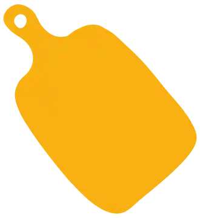
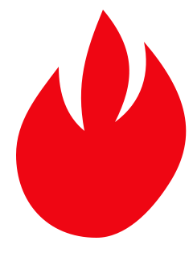
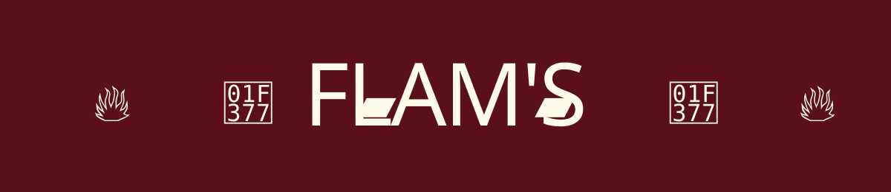
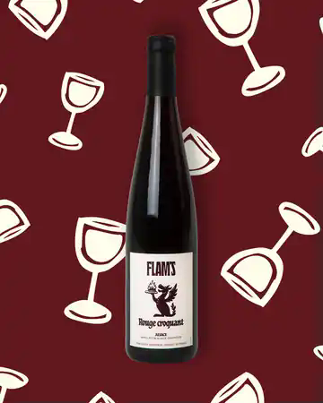
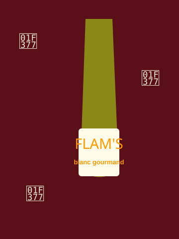
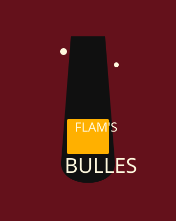

Ambiance
Un repaire chaleureux, jamais théâtral.
Le dragon reste dans les détails : griffures dans la matière, traces brûlées, bois sombre, éclats de feu, lumière basse. On ne le montre pas, on sent qu'il est passé par là.
boisbraiserochevin

RéserverFeu doux, grande table, esprit libre
Flam's réchauffe la flammekueche avec une ambiance plus actuelle : matière brute, lumière chaude, vins faciles à partager et tables qui prennent vie.



Ambiance
Le dragon reste dans les détails : griffures dans la matière, traces brûlées, bois sombre, éclats de feu, lumière basse. On ne le montre pas, on sent qu'il est passé par là.
Les vins Flam's
Rouge croquant, blanc gourmand, bulles franches : une cave lisible, festive et pensée pour accompagner la flammekueche sans prendre toute la place.



Groupes
Anniversaire, afterwork, dîner de bande, repas improvisé : Flam's doit rester fluide, lisible, vivant. Le site donne envie de venir maintenant, pas de lire un mode d'emploi.
Organiser une tabléeVenir